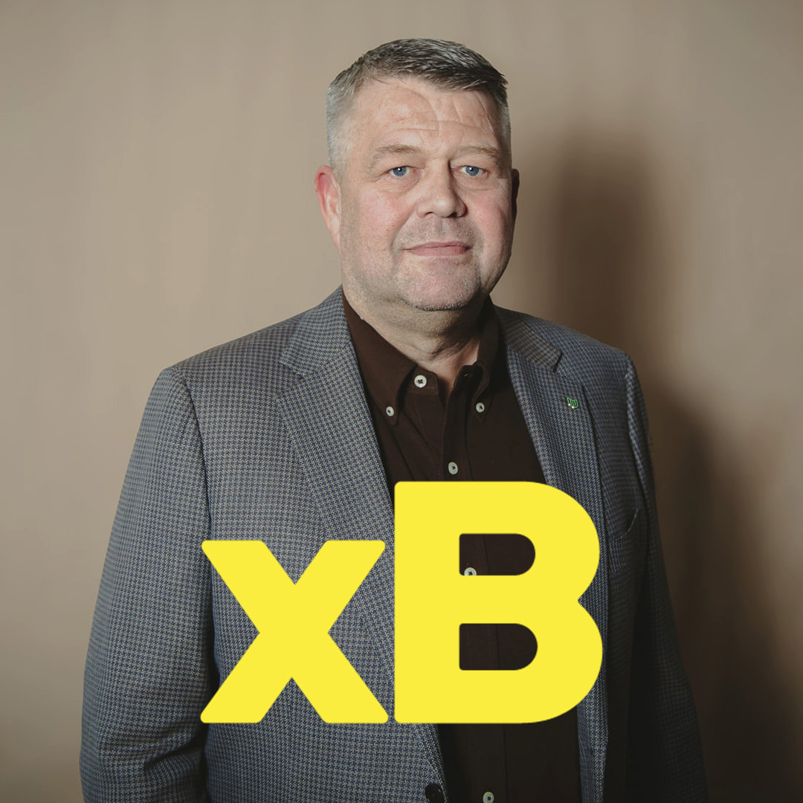
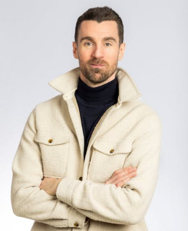
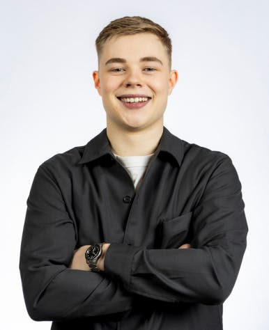
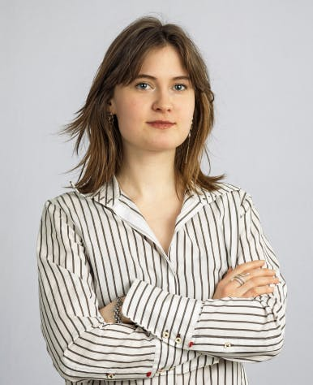
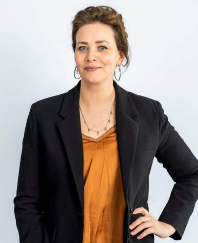
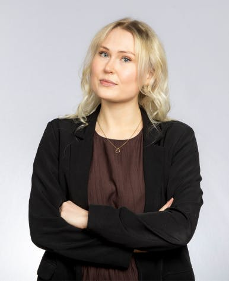
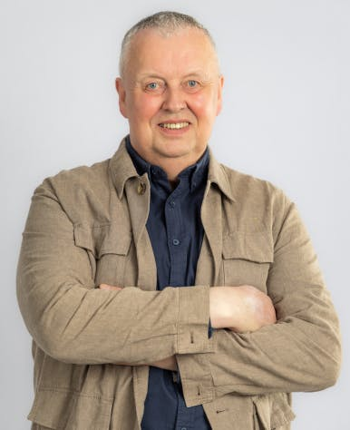

🗳️ Scan Review — 2026-05-01
All results from today’s scanning session, awaiting approval before being applied to the main site.
0 bios written
0 news articles across 0 candidates
2 party platforms found
24 found photos
⚠️ Nothing has been applied to the live site yet. Review below, then give approval.
📝 Biographies 0
No bio results file found.
📰 News Articles 0 articles · 0 candidates
No news results file found.
📋 Party Platforms 2
Kjartan Atli leiðir Samfylkinguna í Garðabæ — stefnuskrá 2026-2030
Frítt í strætó fyrir börn
Minnkum skutlið með fríum strætó fyrir börn og ungmenni.
✓ verbatim from page„Minnkum skutlið – frítt í strætó fyrir börn og ungmenni"
Þak á leikskólagjöld
Setjum þak á leikskólagjöld og 100% systkinaafslátt.
✓ verbatim from page„Þak á leikskólagjöld og 100% systkinaafsláttur"
Hærri hvatapeningar
Hækkum hvatapeninga og lækkum aldursmörkin.
✓ verbatim from page„Hækkum hvatapeninga, lækkum aldursmörk og aukum frelsi"
Lifandi lífsgæðakjarni
Byggjum lifandi lífsgæðakjarna fyrir eldri borgara.
✓ verbatim from page„Byggjum lifandi lífsgæðakjarna"
Bætt aðstaða nemenda
Bætt vinnuaðstaða fyrir alla nemendur og öflug sérdeild í Garðabæ.
✓ verbatim from page„Bætt vinnuaðstaða fyrir alla nemendur"
Opnum bókhaldið
Opnum bókhaldið og aukum traust í stjórnsýslu bæjarins.
✓ verbatim from page„Opnum bókhaldið og aukum traust"
Nýsköpunar- og menningarhús
Frá skjánum í sköpun: nýsköpunar- og menningarhús fyrir unga fólkið.
✓ verbatim from page„Frá skjánum í sköpun: Nýsköpunar- og menningarhús"
✓ Own party site
Samfylkingin's official Garðabær page — Stefnuskrá 2026-2030. Selected 7 bullets across 4 policy areas, all verified verbatim against the live page body via curl.
Garðabæjarlistinn — málefnin fyrir 2026
Húsnæði fyrir alla
Auka framboð á fjölbreyttum húsnæðiskostum fyrir fólk á öllum aldri.
✓ verbatim from page„Auka framboð á fjölbreyttum húsnæðiskostum fyrir fólk á öllum aldri"
Öryggi vegfarenda
Leggja þunga áherslu á öryggi fólks á ferð í Garðabæ.
✓ verbatim from page„Leggja þunga áherslu á öryggi fólks á ferð"
Jöfnun stöðu íbúa
Forgangsraða fjármagni með það markmið að jafna stöðu íbúa.
✓ verbatim from page„Forgangsraða fjármagni með það markmið að jafna stöðu íbúa"
Lýðræðisleg þátttaka
Auka raunverulega þátttöku íbúa í ákvörðunartöku.
✓ verbatim from page„Auka raunverulega þátttöku íbúa í ákvörðunartöku"
Gjaldfrjálsir leikskólar
Stefna að gjaldfrjálsum leikskólum og styðja við starfsfólk skóla.
✓ verbatim from page„Stefna að gjaldfrjálsum leikskólum"
Loftslagsmál í forgangi
Gera Garðabær að leiðandi sveitarfélagi í loftslagsmálum.
✓ verbatim from page„Gera Garðabær að leiðandi sveitarfélagi í loftslagsmálum"
Stuðningur við barnafjölskyldur
Lækka með markvissum og ábyrgum hætti álögur á barnafjölskyldur.
✓ verbatim from page„Lækka með markvissum og ábyrgum hætti álögur á barnafjölskyldur"
Mannréttindi og inngilding
Skýra mannréttinda- og inngildingarstefnu með mælanlegum markmiðum.
✓ verbatim from page„Skýra mannréttinda- og inngildingarstefnu með mælanlegum markmiðum"
✓ Own party site
Garðabæjarlistinn's own malefnin page covers 14 policy areas with 28+ bullets. Selected 8 representative bullets, all verified verbatim against the live page body via curl (browser UA).
📷 Photos 24 found
Magnea Gná Jóhannsdóttir
images/candidates/f67ee66beda154d1.jpg
Hjördís Dröfn Vilhjálmsdóttir
images/candidates/5cfcd6031003fa2d.jpg
Björg Baldursdóttir
images/candidates/2e6d62cef67c1c54.jpg

Róbert Jóhann Guðmundsson
images/candidates/9536eb06a35a600d.jpg

Kjartan Atli Kjartansson
images/candidates/da7ff8d6f508600a.jpg
Vilborg Anna Strange Garðarsdóttir
images/candidates/de2a269f8699a1fe.jpg
Rakel Margrét Viggósdóttir
images/candidates/d2fab1caa1df115a.jpg
Vilmar Pétursson
images/candidates/ff26ea39ab9d1dbe.jpg

Ögmundur Árni Sveinsson
images/candidates/41472cadfe5d1cc1.jpg
Katrín Júlíusdóttir
images/candidates/ddc07113896fcaaa.jpg
Rósanna Andrésdóttir
images/candidates/2c79e0301783f374.jpg
Guðfinna Guðmundsdóttir
images/candidates/6cf0e276fb579c01.jpg
Ragnheiður Hergeirsdóttir
images/candidates/e07a09352294a605.jpg

Freyja Kvaran
images/candidates/548e0aabef59020c.jpg
Jón Gunnlaugur Viggósson
images/candidates/92bcb7ae3b6e8e50.jpg
Ásdís Magnúsdóttir
images/candidates/0a3731adde7d15a2.jpg

Ósk Sigurðardóttir
images/candidates/50fa06df25c31a3c.jpg
Stefán Arinbjarnarson
images/candidates/7a6a35caeb78cdc2.jpg
Greta Ósk Óskarsdóttir
images/candidates/b6e15275cfda1345.jpg

Birta Mjöll Antonsdóttir
images/candidates/c57bead5fc393300.jpg
Heiða Mist Kristjánsdóttir
images/candidates/166f207e705011e5.jpg
Kristján Sveinbjörnsson
images/candidates/3b2636c297c7575b.jpg

Rafn Svanur Oddsson
images/candidates/007db577c2cd2787.jpg
Guðmundur Andri Thorsson
images/candidates/1bde25d0bdf3fc5f.jpg